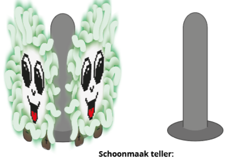

D.I.N.G.

D.I.N.G. is an IOT device that's supposed to help families keep their kitchen clean. D.I.N.G. stands for De Interactieve Noedel Gadget. DING is a speaker with which you can listen to music. However, it will become angry and start to glow red the longer you haven't cleaned. Once its patience is completely gone, your music will stop and it will tell you that it's dissapointed in you. To make your DING happy again, you have to bring it to the docking station in the kitchen, which we called the 'Schoonmaak Teller', and it will gradually become happier as you clean the kitchen.
I worked at this in a team of four. We also made a commercial video for this product.

 REMMOR
REMMOR